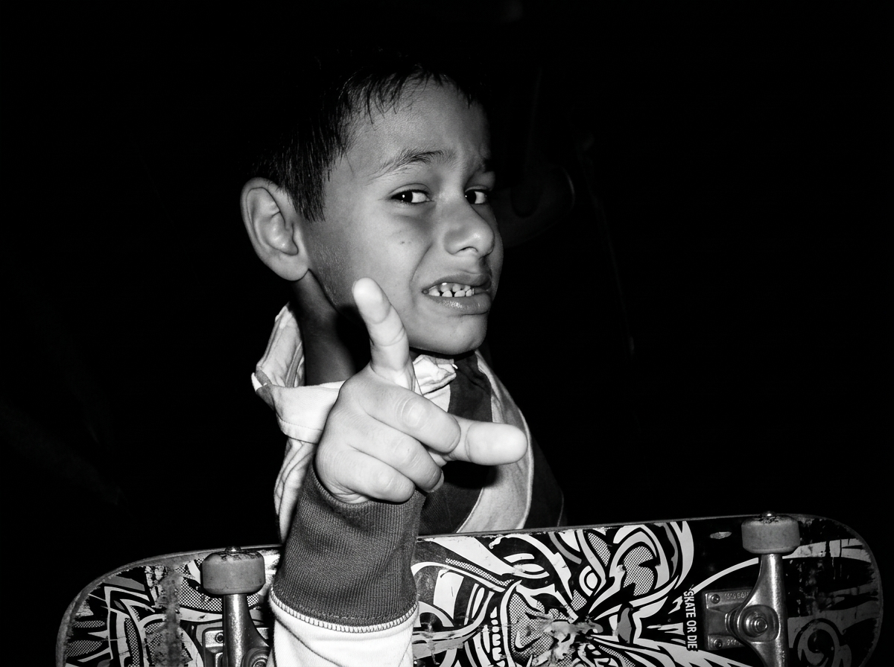
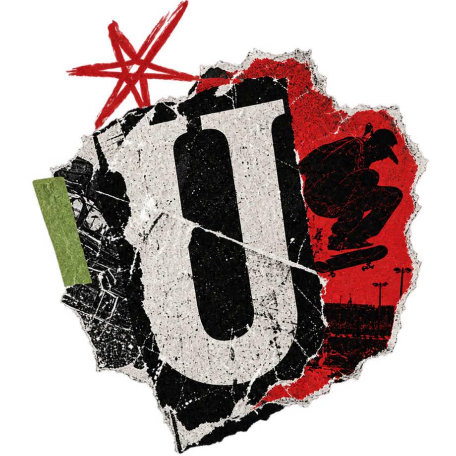
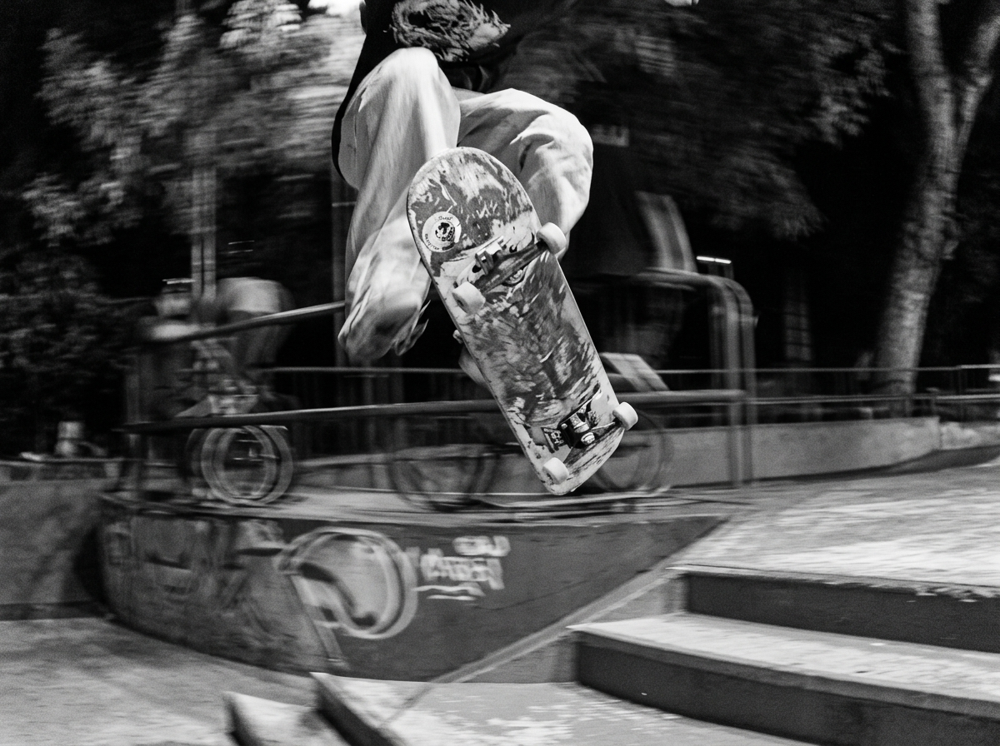
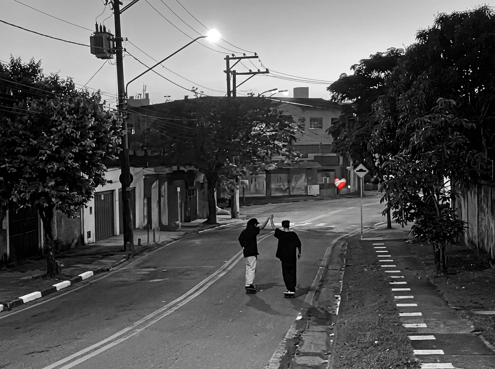
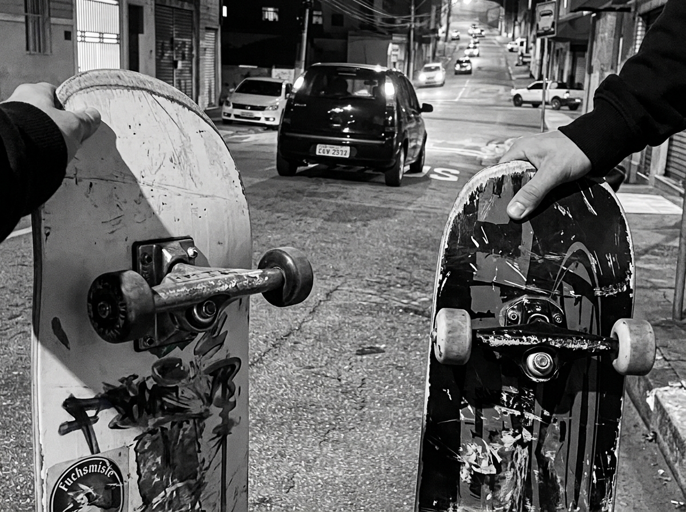
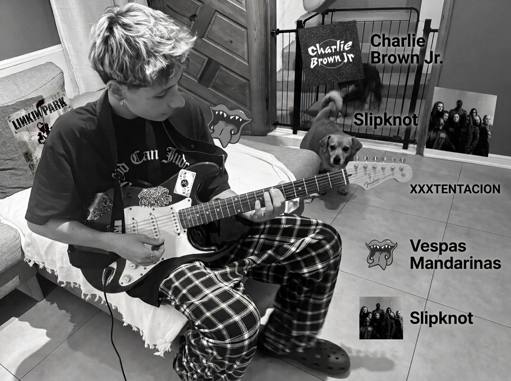
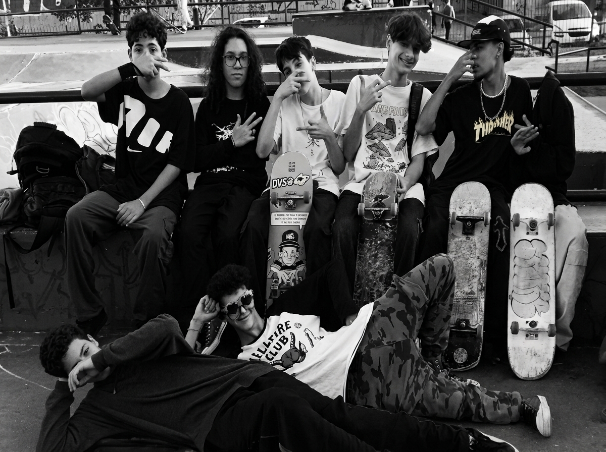
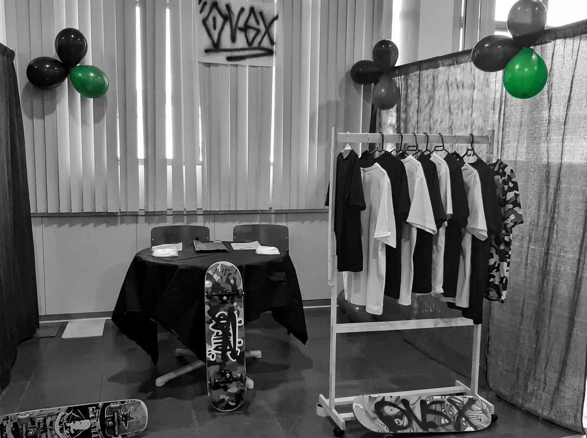

Como tudo começa
Antes de ser meu, o skate foi do meu pai. Aos seis anos ele me apresentou o skate, e aos dez me entregou o dele: mais velho que eu, e o melhor que já tive.

UNFINISHED®Uma história inacabada. Minha história com o skate ainda está acontecendo, e por isso só consigo contá-la em pedaços.
Explore a história ↓
Still in progress NOT A FINISHED STORY
Todo skatista conhece o gosto do chão.
Cair,
sentar,
esperar a dor passar
e tentar de novo.
é assim que uma manobra nasce, e é assim que este site foi feito.
UNFINISHED não é um portfólio e não é um final.
É um arquivo aberto de alguém que aprendeu a cair antes de aprender a acertar
e entendeu que nunca estar pronto não é falta. É movimento.
Aqui cada página é uma tentativa, cada foto é um recorte e cada texto é um rascunho que ainda aceita correção.
A volta para casa sempre termina com sensação de missão cumprida, e logo começa a próxima.
Este é o manifesto: contar a história enquanto ela acontece, sem esperar acertar.

Antes de ser meu, o skate foi do meu pai. Aos seis anos ele me apresentou o skate, e aos dez me entregou o dele: mais velho que eu, e o melhor que já tive.

A pista, as ruas, a volta para casa. Cada lugar virou um arquivo de pessoas. A rua, para mim, é liberdade e união.

A terrível descida, os roxos do corrimão, dois ligamentos rompidos. Se não dá para evitar a queda, dá para escolher onde cair.

Rock e rap, mas principalmente rock. Deftones e Charlie Brown Jr.: os dois falam de cair, e os dois insistem em continuar.

Roupa rasgada não é desleixo. Cada rasgo no tênis conta uma sessão que terminou sem ninguém se dar por vencido.

Referências visuais e cultura alternativa que moldam o meu jeito de olhar: do som que toca no fone à cultura que andava junto comigo para onde fosse.
Seis anos, o skate do meu pai e um chão que parecia sempre mais perto do que deveria. As manobras só vieram aos dez.
O erro não é o fim, é parte do processo. Quem cai cem vezes por causa de uma manobra aprende que o fracasso é uma etapa, e não um veredito.
Ainda não sei qual será a próxima manobra, a próxima fase, a próxima versão de mim. A história continua, ainda sem ponto final.